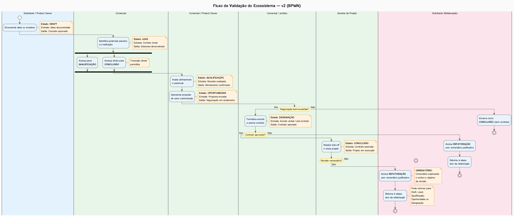

Bem-vindo ao Portal Interativo
Este portal centraliza todos os artefatos visuais, matrizes de governança e playbooks de casos de uso do ecossistema. Utilize os filtros para navegar pelos diferentes cenários e entender como o fluxo de validação funciona na prática.
Destaques
- BPMN: Fluxo de validação em swimlanes com transições flexíveis e refatoração.
- DMN: 14 regras de decisão que governam as transições entre estados.
- RACI: Matriz de responsabilidades para 20 atividades e 10 papéis.
- RAPID: Matriz de decisão para 18 decisões estratégicas e operacionais.
- Playbooks: 50 casos de uso cobrindo todos os cenários possíveis do fluxo.
Artefatos Visuais e Matrizes
Playbooks de Casos de Uso
Explore os 50 playbooks que cobrem todos os cenários possíveis do fluxo de validação. Cada caso inclui o fluxo esperado, pontos de falha e recuperação automática/manual.
Gestão de Tribos: Equilíbrio de Nash e Gamificação
Nosso ecossistema adota uma estrutura de gestão baseada em **Tribos**, inspirada na **Teoria dos Jogos** de John Nash, buscando um **Equilíbrio de Nash** onde a colaboração e a otimização individual resultam em sucesso coletivo. Cada tribo terá no máximo 3 OKRs (Objectives and Key Results) e toda a estrutura será gamificada para incentivar o engajamento e o alinhamento.
Manifesto das Tribos
Para uma compreensão aprofundada dos fundamentos teóricos e filosóficos desta abordagem, consulte o Manifesto das Tribos.
Estrutura das Tribos: Estratégia vs. Performance
| Tipo de Tribo | Foco Principal | OKRs (Máx. 3) | Métricas | Gamificação |
|---|---|---|---|---|
| Estratégia | Visão de longo prazo, pesquisa, novos produtos, parcerias, governança. | Qualitativos, de impacto futuro (ex: "Lançar 1 novo produto disruptivo") | NPS, Pesquisas de Mercado, Potencial de Inovação, Engajamento de Parceiros | Badges de Inovação, Pontos por Pesquisa, Reconhecimento por Visão Estratégica |
| Performance | Execução de curto/médio prazo, otimização de processos existentes, entrega de valor imediato. | Quantitativos, de eficiência e resultado (ex: "Aumentar conversão de leads em 15%") | Receita, CAC, LTV, Tempo de Resposta, Eficiência Operacional | Rankings de Performance, Recompensas por Metas Atingidas, Desafios de Otimização |
Gamificação e Incentivos
A gamificação é central para engajar os membros e alinhar os interesses das tribos com os objetivos do ecossistema. Elementos como pontuações, rankings, badges, conquistas e recompensas serão utilizados para criar um ambiente competitivo e colaborativo, onde o sucesso individual e da tribo contribui para o Equilíbrio de Nash do sistema.
Governança e Transparência
A governança será transparente, com OKRs e resultados acessíveis. Ferramentas de comunicação como Telegram e WhatsApp terão canais dedicados para cada tribo, facilitando a coordenação e a tomada de decisões alinhadas com o manifesto.
Fluxo de Validação do Ecossistema
O fluxo de validação implementa 6 estados principais mais o estado "Delayed" para recuperação automática de falhas.

Estados do Fluxo
| Estado | Descrição | Transições Possíveis |
|---|---|---|
| Draft | Ideia inicial documentada | Lead, Qualificação, Oportunidade, Designação, Conclusão |
| Lead | Parceiro identificado | Qualificação, Conclusão |
| Qualificação | Alinhamento avaliado | Oportunidade |
| Oportunidade | Proposta enviada | Designação, Conclusão |
| Designação | Contrato em formalização | Conclusão, Refatoração |
| Conclusão | Parceria formalizada | Refatoração |
| Delayed | NOVO: Falha detectada, aguardando ação | Estado Anterior, Próximo Estado (por ação do usuário) |
Lógica de Recuperação (Delayed)
Sempre que uma transição falhar ou um erro for detectado, o fluxo automaticamente entra no estado Delayed. A partir deste estado, o usuário pode:
- Retornar ao estado anterior: Reverter a transição e tentar novamente.
- Avançar para o próximo estado: Prosseguir após resolver o problema.
- Acionar refatoração: Revisar a iniciativa em uma etapa anterior.